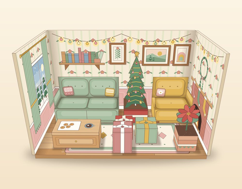
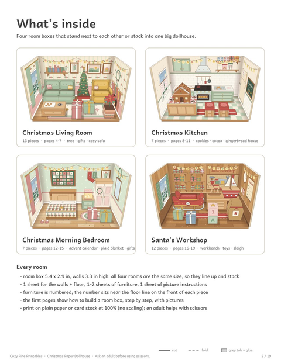

Christmas Paper Dollhouse Printable
4 room boxes · 39 furniture pieces · picture steps · ages 6+ with adult help cutting
A dollhouse that starts as a PDF. Print it, cut it out, fold and glue, and you get four little Christmas rooms: a living room with a tree and fireplace, a gingerbread kitchen, a morning bedroom with an advent calendar on the wall, and Santa's workshop with a sleigh and a rocking horse.
Every room is a small open box (5.4 x 2.9 x 3.3 in, about 13.7 x 7.4 x 8.4 cm). The four boxes are the same size, so they stand side by side on a shelf or stack into one big house. The furniture is numbered, and each room has a page of picture steps, so kids can follow along with very little reading.
Want to try before you buy? The Christmas Morning Bedroom is free, complete with its furniture and steps:
⬇ Download the free Christmas bedroom room (US Letter PDF) ⬇ Download the free Christmas bedroom room (A4 PDF)Free PDF includes:
- The complete Christmas Morning Bedroom: room box template and 7 furniture pieces
- A 'how to build a room box' page and 6 picture steps
- 6 pages, US Letter or A4
A look inside the dollhouse





What you get
The PDF has 19 pages in US Letter and A4. There is a page that shows how to build a room box, then each room has its own flat template (back wall and floor, plus two side walls), one or two sheets of numbered furniture, and a page of picture steps.
Furniture is built from small boxes and folded walls: sofas with arms and backs, a gingerbread house, a bed with a plaid blanket, a toy sleigh, building blocks and more. 39 pieces in all, from 0.6 in (1.5 cm) gifts to a 2.2 in (5.6 cm) wardrobe.
Ages and help
This is a craft for ages 6+ with a grown-up around. Cutting out the templates and the smallest pieces is the tricky part, so we suggest an adult cuts, and kids fold, glue and arrange the rooms. Start with the free bedroom to see how it goes. Before release, a child built the living room — the trickiest room — from these picture steps.
Once the rooms are built, the play begins: a pretend Christmas morning, a gingerbread bake, a night in the workshop.
The full set has all four rooms:
Christmas Paper Dollhouse

- 4 printable room boxes: Christmas living room, gingerbread kitchen, morning bedroom and Santa's workshop
- 39 numbered furniture pieces to cut, fold and glue, plus picture instructions for every room
- Each room is 5.4 x 2.9 x 3.3 in (13.7 x 7.4 x 8.4 cm); rooms stand side by side or stack into a house
- US Letter & A4 · 19 pages · instant PDF download
$7.00
Get the Christmas Paper Dollhouse →Printing and building tips
- Print at 100% ("Actual size"), not "Fit to page", so the walls match the floor.
- Cardstock (65-110 lb, 160-200 gsm) makes the room boxes stand firmly; plain paper works for trying it out.
- Crease the dashed fold lines against a ruler before folding; a glue stick is enough for most tabs.
- Build one room at a time. Four rooms make a good stretch of Christmas break.
Frequently asked questions
How big is the finished dollhouse?
Each room box is 5.4 x 2.9 x 3.3 in (13.7 x 7.4 x 8.4 cm). Placed in a 2 x 2 grid, the four rooms make a house about 11 in (28 cm) wide.
Can I print it on regular paper?
Yes, but cardstock (160-200 gsm) gives sturdier walls. Plain paper is fine for a first try or for coloring and decorating.
What is in the free version?
The full Christmas Morning Bedroom: its room box, 7 furniture pieces and the picture steps, in US Letter or A4. The other three rooms are in the paid set.